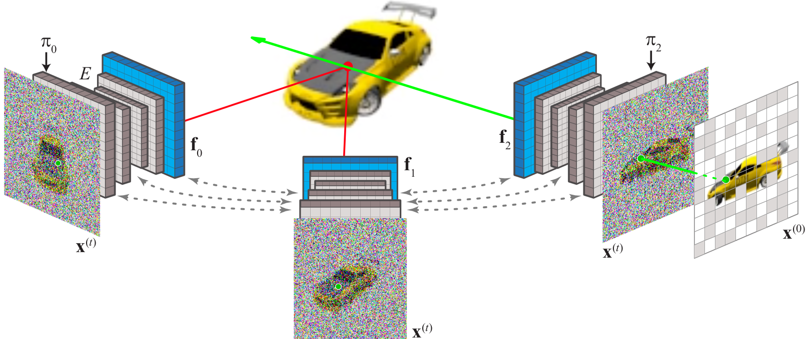

Our developed generative AI technology achieves state-of-the-art 3D/4D reconstruction from a single image or video
Here we give our model a single image as an input. It accurately predicts the depths of the visible part of the scene and synthesises plausible details in hidden regions.
Top: MVImgNet chairs. Bottom: CO3D hydrants. These videos were not seen during model training.
Here we give our model six images as an input. Our solution reconstructs the details visible in all images, predicting realistic depth-maps and images with fine detail.
Top: MVImgNet chairs. Bottom: CO3D hydrants. These videos were not seen during model training.
Our neural scene representation IB-planes defines 3D content using image-space features. Each camera $\pi_v$ is associated with a feature-map $\mathbf{f}_v$ (blue); together both parametrise a neural field that defines density and color for each 3D point $p$ (red dot). This can be converted to an image using standard NeRF ray-marching.
We incorporate this representation in a diffusion model over multi-view images. At each denoising step, noisy images $\mathbf{x}^{(t)}$ are encoded by a U-Net $E$ with cross-view attention (gray dashed arrows), that yields pixel-aligned features $\mathbf{f}_v$ (blue). To render pixels of denoised images (only one $\mathbf{x}^{(0)}$ is shown for clarity), we use volumetric ray-marching (green arrow), decoding features unprojected (red lines) from the other viewpoints.
For 3D reconstruction, we replace one or more of the noisy images with noise-free input images and perform conditional generation. The noise in the other images encodes the content of regions that are not visible in the input images, ensuring all parts of the scene are coherent and contain plausible details.
